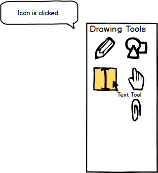
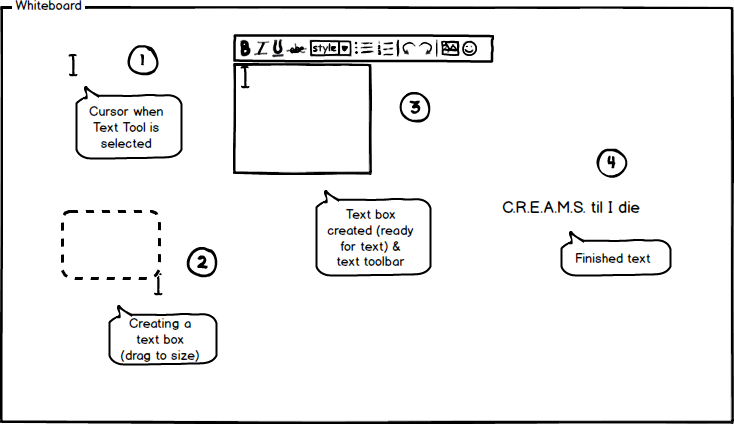

2.7.3. Text Tool
To use the text tool, the user moves the cursor over to the 'Drawing Tools' window and clicks on the text tool icon.
As shown in Figure 1, once the text tool is clicked, the system responds by highlighting the tool and displaying the
name of the tool in small text under the cursor.

Figure 1: Text tool icon.
Once the text tool is selected, the cursor changes into that tool icon representing that the user is ready to
user the tool as shown below in Figure 2 (1). (2) shows the user creating a text box by clicking and dragging the
cursor to the desired text box size. Once the desired text box size is reached, the user releases the cursor creating
the text box where the user can begin typing. Above the newly created text box in (3) is a small text toolbar with
basic text editing tools such as style (bold, italic, underline), text size, font, alignment, and more. When the user is
done creating the text, the user clicks outside of the text box to finalize the text. The box then disappears, leaving
just the text visible in (4). To edit the text again, the user clicks the text, bringing up the text box and text toolbar
again.

Figure 2: Using the text tool to create text.
Prev: color-palette
| Next: pencil-tool
| Up: drawing-overview
| Top: index